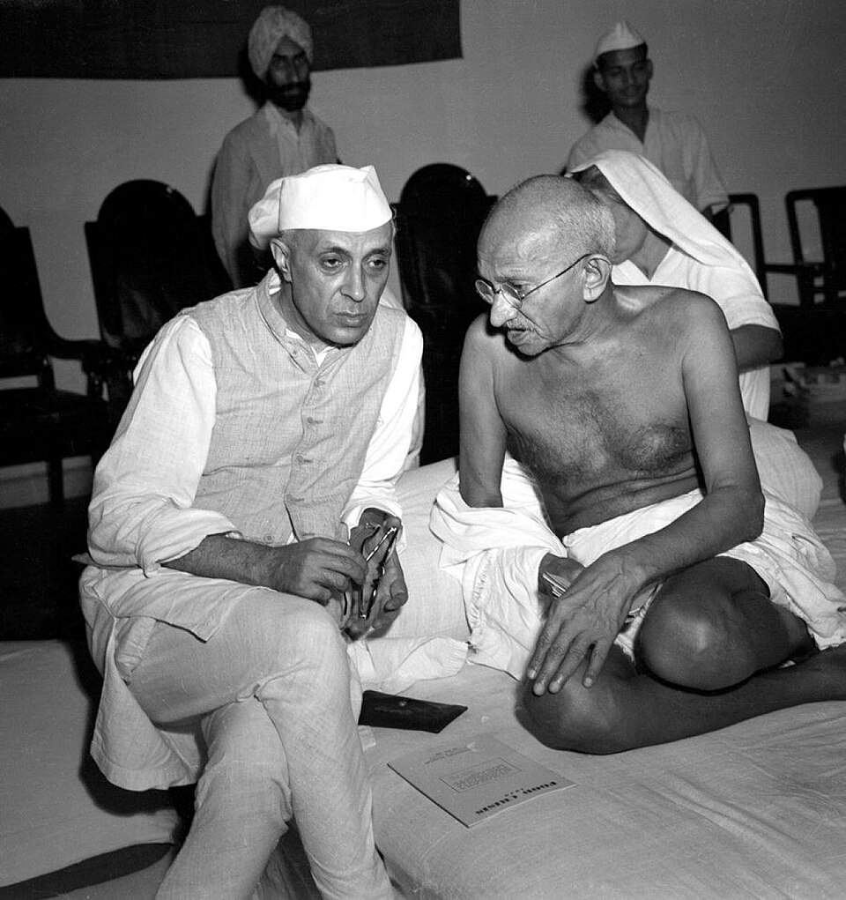

1Descolonización de Asia y África
1945-1975 · Las colonias se vuelven países independientes
Causas y contexto
Las potencias europeas salieron débiles de la Segunda Guerra Mundial. En Asia, los movimientos nacionalistas pidieron la independencia en lugar de volver a ser colonias.
(Hobsbawm, 1998; Office of the Historian, s. f.-b)Independencias
Cada país lo logró a su manera: la India, con la resistencia pacífica de Gandhi (1947); Indonesia y Argelia, con guerras largas.
(Hobsbawm, 1998)Consecuencias políticas y territoriales
Entre 1945 y 1960 nacieron unos 36 países, casi todos pobres. La ONU pasó de 35 miembros en 1946 a 127 en 1970. Algunos tuvieron gobiernos estables y otros sufrieron dictaduras o guerras civiles.
(Office of the Historian, s. f.-b)